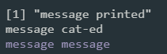

4 Control Flows
So far, the functions we wrote (IsEven, IsMonth, IsLeapYear) are simple enough in that their return values are straightforward logical combinations of arithmetic operations. Therefore, we are able to implement all three functions with a sequence of operators. In reality, the logic required of a function is often more complex, and control flow statements are needed.
Control flow statements defines the order in which functions are executed. Each programming language differs slightly in its implementation of control flows. We give introduction to the commonly used control flow statements used in R.
Recommended readings:
4.1 Choice
Example: Implement a function
DaysInYearthat returns the number of days in a given year. (A year has 365 days except for when it is a leap year when it has 366 days)
We have IsLeapYear which identifies a leap year. Based on the return value from IsLeapYear, we need to choose between 365 and 366 as the return value for DaysInYear. Its logic can be illustrated with a flow chart:

DaysInYear4.1.1 if, else, else if
The use of if…else statement creates two branches of code that are selectively executed upon the evaluation of a condition. i.e. A choice is made between two options.
What if we have more than two options to choose from?
Example: A customer gives a score between 0 and 10 as to rate a service received. And the following function
GradeServiceScoretranslates the score to 3 levels of grades:
Note the last else can be omitted:
4.1.2 Revisit IsLeapYear
Let’s have a look back at our implementation of IsLeapYear:
The return value is dependent on the evaluation of these 3 conditions:
x %% 400 == 0x %% 4 == 0x %% 100 != 0
Instead of using logical operators (&&, ||), we can use if, else, and else if statements to branch the code instead:
# One of the following two implementations is incorrect. Can you spot the bug?
IsLeapYear <- function (x) { # implementation A
if (x %% 400 == 0) {
return(TRUE)
} else if (x %% 4 == 0) {
if (x %% 100 != 0) {
return(TRUE)
}
}
return(FALSE)
}
IsLeapYear <- function (x) { # implementation B
if (x %% 400 == 0) {
return(TRUE)
} else if (x %% 4 == 0) {
if (x %% 100 != 0) {
return(TRUE)
} else {
return(FALSE)
}
}
}Question: What is the difference between these two implementations, and which one is better? How would you update our implementation of
DaysInYearbased on the same philosophy?
4.2 Loops
4.2.1 :
Before we start using loops, let’s introduce the colon operator :. The colon operator is used to generate a regular sequence of numbers.
4.2.2 for
Example: Print all leap years between two given years.
?print - prints its argument
4.2.3 next, break
4.2.4 while
Example: Write a function that print a number (default 5) of leap years from a given year.
4.3 Exception handling
4.3.1 stop("mesg.")
?stopifnot- if any of the expressions is not TRUE, thenstopis called.
4.3.2 warning("mesg.")
4.3.3 message("mesg.")

print, cat, and messageYou should use print and cat for messages that you, the writer of the code, want to read deliberately. message is for reminding the user, not the developer, that the program has done something. Logs of a web application is a good example of things better printed with message. After all, message is the brother of stop and warning to react and indicate the conditions of the system.
Exercises
See Section 8.2 for more exercises on writing functions using control flows.